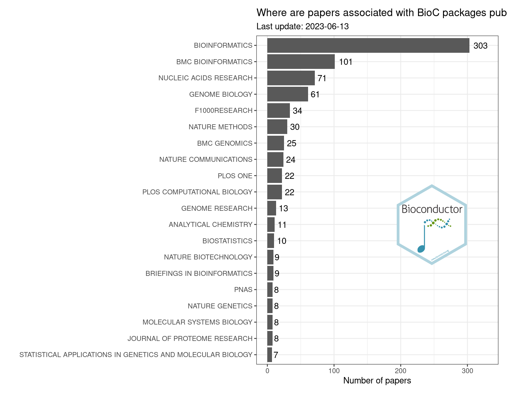

Where can I publish a paper describing my Bioconductor package?
bioinformatics
reproducible research
bioconductor
scientific writing
rstats
Check out where Bioc developers have published their papers
Author
Fabrício Almeida-Silva
Published
June 12, 2023
Motivation
When I developed BioNERO, my first R/Bioconductor package, I didn’t know to which journals I could submit the paper describing it. Since then, I’ve seen many other R developers that have faced the same issue. To help solve this problem, here I will guide you on how to do some web scraping to find out the main journals where Bioc developers publish papers describing their packages.
Extracting citation information from Bioconductor’s browsable code base
Bioconductor offers a browsable code base that lets users explore git repositories and search code in all Bioconductor packages. If we go to the Code Search page and search journal f:CITATION, we will get a list of all CITATION files (where developers include citation information for their packages) that include the string “journal”.
Knowing that, we can do some web scraping using the rvest package to extract such information for all packages and parse it into a nicely-formatted data frame.
# Load required packageslibrary(tidyverse)library(rvest)# Get URL of the search "journal f:CITATION"url <-"https://code.bioconductor.org/search/search?q=journal%20f%3aCITATION"n <-2000# number of files to show# Get list of tables containing journal namesjournal_list <- rvest::read_html(paste0(url, "&num=", n)) |> rvest::html_table()# Parse list of data frames into a large, tidy listjournal_df <-Reduce(rbind, lapply(seq_along(journal_list), function(x) { df <- journal_list[[x]]# Package name pkg <-gsub(":.*", "", names(df)[1])names(df) <-"entries" df <-as.data.frame(df) |># 1) Keep only rows containing 'journal=' or 'journal ='filter(str_detect(entries, "journal\\s*=")) |># 2) Get journal name (remove quotation marks, whitespace, commas, etc)mutate(journal =str_replace_all(entries, ".*=", ""),journal =str_replace_all(journal, '\\\"', ''),journal =str_replace_all(journal, "'", ''),journal =str_replace_all(journal, "\\.", ""),journal =str_squish(journal),journal =str_to_upper(journal),journal =str_replace_all(journal, ",$", ""),journal =str_replace_all(journal, "\\)", ""),journal =str_replace_all(journal, "\\(", ""),journal =str_replace_all(journal, "\\{", ""),journal =str_replace_all(journal, "\\}", "") ) |>select(journal)# Add a column named `package` containing package nameif(nrow(df) >0) { df <- df |>mutate(package = pkg) }return(df)}))# Taking a look at the first rowshead(journal_df)
Now, because CITATION files are created manually by developers, a big (and expected) problem is the lack of standardization. This leads to different developers referring to the same journal by different names (e.g., Nature Methods and Nat Methods, Nucleic Acids Research and NAR, etc). You can see that yourself by executing sort(unique(journal_df$journal)). While I can never expect to fix this problem completely (especially if you are reading this post in the future and new packages have been added), below is my attempt to fix most of the inconsistencies. I will probably miss some strange exceptions, but I guess I can live with it, right?
# 'Journals' to remove (these are not actually journals)to_remove <-c("", "07", "1", "10", as.character(2010:2023), "2022-2032","IN REVIEW", "IN PREPARATION", "JOURNAL", "MANUSCRIPT IN PREPARATION","TBA", "TBD", "UNDER REVIEW", "UNIVERSITY OF REGENSBURG","BIOCONDUCTOR", "SUBMITTED", "MEDRXIV", "BIORXIV", "PREPRINT", "ARXIV")# Standardize namesjournal_df_clean <- journal_df |>filter(!journal %in% to_remove) |>mutate(journal =str_replace_all(journal, c("ALBANY NY.*"="","ALGORITHMS MOL BIO"="ALGORITHMS FOR MOLECULAR BIOLOGY","ANAL CHEM"="ANALYTICAL CHEMISTRY","ANN APPL STAT"="ANNALS OF APPLIED STATISTICS","PREPRINT.*"="","BIONFORMATICS JOURNAL"="BIOINFORMATICS","OXFORD, ENGLAND"="","ACCEPTED"="","BMC SYST BIOL"="BMC SYSTEMS BIOLOGY","COMPUT METHODS PROGRAMS BIOMED"="COMPUTER METHODS AND PROGRAMS IN BIOMEDICINE","CYTOMETRY A"="CYTOMETRY PART A","EPIGENETICS CHROMATIN"="EPIGENETICS & CHROMATIN","F1000.*"="F1000RESEARCH","FRONT BIOL"="FRONTIERS IN BIOLOGY","GENOME BIOL$"="GENOME BIOLOGY","GENOME RES$"="GENOME RESEARCH",", CODE SNIPPETS"="",", SERIES B"="","J MACH LEARN RES"="JOURNAL OF MACHINE LEARNING RESEARCH","METHODS MOL BIO"="METHODS IN MOLECULAR BIOLOGY","MOL SYST BIOL"="MOLECULAR SYSTEMS BIOLOGY","NAT BIOTECH.*"="NATURE BIOTECHNOLOGY","NAT COMM.*"="NATURE COMMUNICATIONS","NAT GENET"="NATURE GENETICS","NAT IMMUNOL"="NATURE IMMUNOLOGY","NAT METH"="NATURE METHODS","NPG SYST BIOL APPL"="NPG SYSTEMS BIOLOGY AND APPLICATIONS"," GKV873"="","NUCL ACIDS RES$"="NUCLEIC ACIDS RESEARCH","NUCLEIC ACIDS RES$"="NUCLEIC ACIDS RESEARCH","DATABASE ISSUE"="","OXFORD BIOINFORMATICS"="BIOINFORMATICS","PLOS COMPUT BIOL"="PLOS COMPUTATIONAL BIOLOGY","PLOS COMPUTAT BIOL"="PLOS COMPUTATIONAL BIOLOGY","PROC NATL ACAD SCI.*"="PNAS","PROCEEDINGS OF THE NATIONAL ACADEMY OF SCIENCES.*"="PNAS","STAT APPL GENET MOL BIOL"="STATISTICAL APPLICATIONS IN GENETICS AND MOLECULAR BIOLOGY" ) ),journal =str_squish(journal) )# Taking a look at the first rowshead(journal_df_clean)
The final data frame of packages and journals where they published their papers can be explored below:
Summary stats
Now, let’s count the frequency of packages in each journal and show the top 20 journals based number of the number of papers associated with Bioc packages.
# Get top 20 journals in number of papers associated with Bioc pkgscitation_stats <- journal_df_clean %>%count(journal) %>%arrange(-n) %>%slice_head(n =20)citation_stats
journal n
1 BIOINFORMATICS 303
2 BMC BIOINFORMATICS 101
3 NUCLEIC ACIDS RESEARCH 71
4 GENOME BIOLOGY 61
5 F1000RESEARCH 34
6 NATURE METHODS 30
7 BMC GENOMICS 25
8 NATURE COMMUNICATIONS 24
9 PLOS COMPUTATIONAL BIOLOGY 22
10 PLOS ONE 22
11 GENOME RESEARCH 13
12 ANALYTICAL CHEMISTRY 11
13 BIOSTATISTICS 10
14 BRIEFINGS IN BIOINFORMATICS 9
15 NATURE BIOTECHNOLOGY 9
16 JOURNAL OF PROTEOME RESEARCH 8
17 MOLECULAR SYSTEMS BIOLOGY 8
18 NATURE GENETICS 8
19 PNAS 8
20 STATISTICAL APPLICATIONS IN GENETICS AND MOLECULAR BIOLOGY 7
Exploring it visually:
# Read figure with Bioc logobioc_logo <- png::readPNG( here::here("blog", "2022-01-03-bioc_publications", "featured-bioc.png"), native =TRUE)# Define plotting paramslast_updated <-format(Sys.Date(), "%Y-%m-%d")xmax <-max(citation_stats$n) +30xmax <-round(xmax /10) *10# Plot dataggplot(citation_stats, aes(x = n, y =reorder(journal, n))) +geom_col() +geom_text(aes(label = n), hjust =-0.3) +xlim(0, xmax) +labs(title ="Where are papers associated with BioC packages published?",subtitle =paste0("Last update: ", last_updated),x ="Number of papers", y ="" ) +theme_bw() + patchwork::inset_element( bioc_logo,left =0.5,top =0.55,right =0.95,bottom =0.3 ) +theme_void()

And voilà! In case you want to explore the whole table, here it is:
Session information
This post was created under the following conditions:
![]()